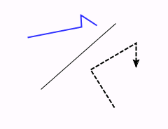

A Line object.
Common Methods
GUI Common Methods
GUI Line Methods
Same as Rectangle with the following modifications to the edit dialog:
No brush properties and fill color.
Added Cubic Bezier:
If checked the points are interconnected with cubic Bezier splines instead of straight lines. (Default: Unchecked)
Added Arrow Properties: